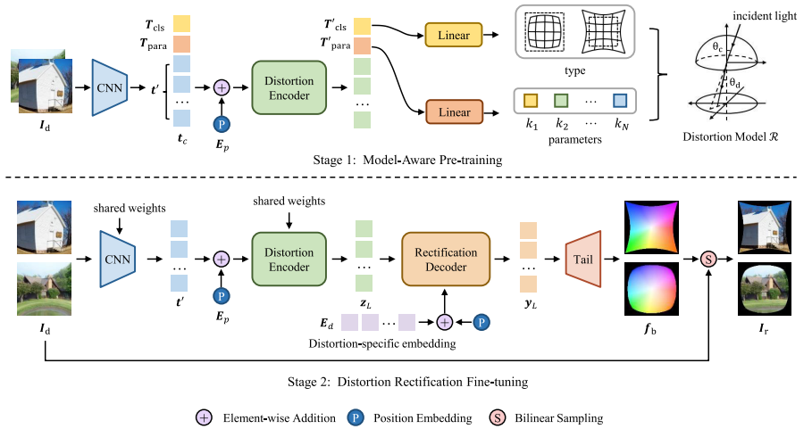
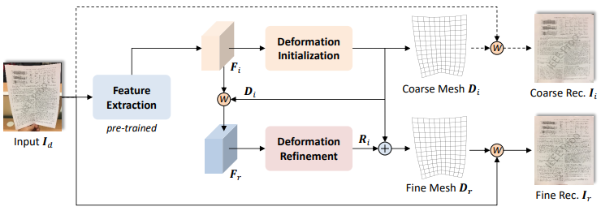
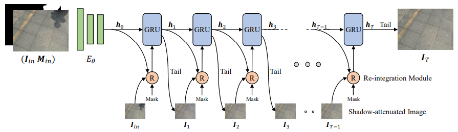
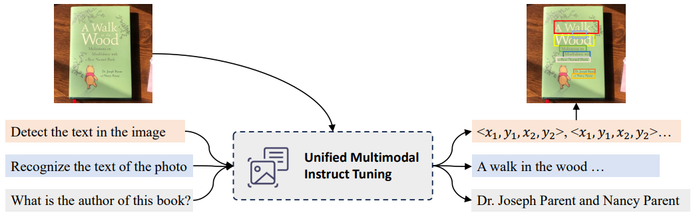
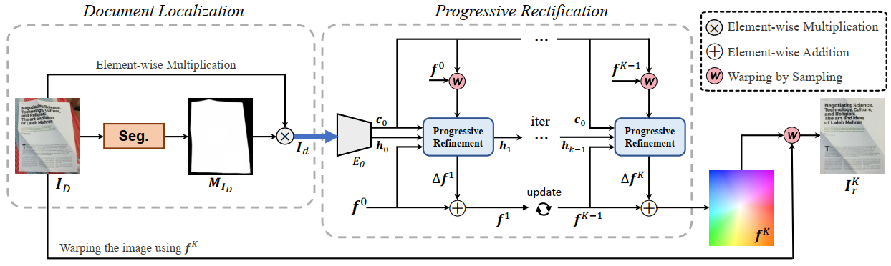
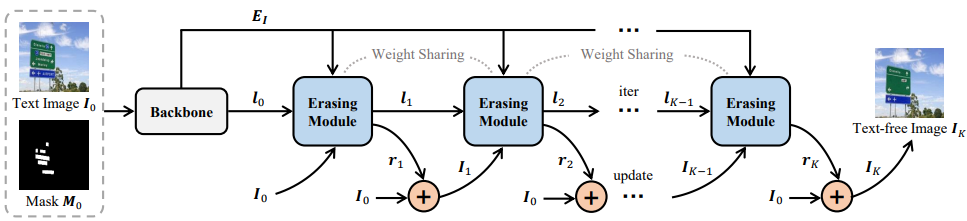

|
Hao Feng 冯浩
Ph.D. Candidate University of Science and Technology of China (USTC) Email: haof@mail.ustc.edu.cn |
About Me
I am currently a Ph.D. candidate at University of Science and Technology of China. My Ph.D. advisors are Prof. Houqiang Li and Prof. Wengang Zhou. I obtained my Bachelor degree (2018) in Xidian University.
My research interests include computer vision and document AI, and I am currently working on multi-modality understanding.
Publications
|
|
Hao Feng, Keyi Zhou, Hao Feng, Wengang Zhou, Yufei Yin, Jiajun Deng, Qi Sun, Houqiang Li
Recurrent Generic Contour-based Instance Segmentation with Progressive Learning IEEE Transactions on Circuits and Systems for Video Technology (TCSVT), 2024 [pdf] [code] [bibtex] |
|
|
Hao Feng, Shaokai Liu, Jiajun Deng, Wengang Zhou, Houqiang Li
Deep Unrestricted Document Image Rectification IEEE Transactions on Multimedia (TMM), 2023 [pdf] [code] [bibtex] |
|
|
Hao Feng, Wendi Wang, Jiajun Deng, Wengang Zhou, Li Li, and Houqiang Li
SimFIR: A Simple Framework for Fisheye Image Rectification with Self-supervised Representation Learning International Conference on Computer Vision (ICCV), 2023 [pdf] [code] [bibtex] |
|
|
Hao Feng, Wengang Zhou, Jiajun Deng, Yuechen Wang, and Houqiang Li
Geometric Representation Learning for Document Image Rectification European Conference on Computer Vision (ECCV), 2022 [pdf] [code] [bibtex] |
|
|
Hao Feng, Yuechen Wang, Wengang Zhou, Jiajun Deng, and Houqiang Li
DocTr: Document Image Transformer for Geometric Unwarping and Illumination Correction ACM International Conference on Multimedia (ACM MM), Oral, 2021 [pdf] [code] [bibtex] |
|

|
Wendi Wang, Hao Feng, Wengang Zhou, Zhaokang Liao, Houqiang Li
Model-Aware Pre-Training for Radial Distortion Rectification IEEE Transactions on Image Processing (TIP), 2023 [pdf] [code] [bibtex] |
|

|
Shaokai Liu, Hao Feng, Wengang Zhou
Rethinking Supervision in Document Unwarping: A Self-consistent Flow-free Approach IEEE Transactions on Circuits and Systems for Video Technology (TCSVT), 2023 [pdf] [bibtex] |

|
Huijie Yao, Wengang Zhou, Hao Feng, Hezhen Hu, Hao Zhou, Houqiang Li
Sign Language Translation with Iterative Prototype International Conference on Computer Vision (ICCV), 2023 [pdf] [bibtex] |
|

|
Yonghui Wang, Wengang Zhou, Hao Feng, Li Li, Houqiang Li
Progressive Recurrent Network for Shadow Removal Computer Vision and Image Understanding (CVIU), 2023 [pdf] [bibtex] |
Manuscripts
|

|
Hao Feng, Zijian Wang, Jingqun Tang, Jinghui Lu, Hao Liu, Wengang Zhou, Houqiang Li, Can Huang
UniDoc: A Universal Large Multimodal Model for Simultaneous Text Detection, Recognition, Spotting and Understanding [pdf] [bibtex] |

|
Hao Feng, Qi Liu, Hao Liu, Jingqun Tang, Wengang Zhou, Houqiang Li, Can Huang
DocPedia: Unleashing the Power of Large Multimodal Model in the Frequency Domain for Versatile Document Understanding [pdf] [bibtex] |
|

|
Hao Feng, Wengang Zhou, Jiajun Deng, Qi Tian, Houqiang Li
DocScanner: Robust Document Image Rectification with Progressive Learning [pdf] [code] [bibtex] |
|

|
Hao Feng, Wendi Wang, Shaokai Liu, Jiajun Deng, Wengang Zhou, Houqiang Li
DeepEraser: Deep Iterative Context Mining for Generic Text Eraser [pdf] [code] [bibtex] |
Academic Services
| Invited Reviewer for journals and conferences, including TMM, TCSVT, CVPR, ICCV, ECCV, ACM MM, ACL, etc. |